Ellucian Experience release notes
These release notes describe new features, enhancements, and updates in Ellucian Experience releases.
Experience 2.5
Experience 2.5 is a maintenance release that incorporates defect fixes.
Update to the Experience App (rebuild required)
This release addresses High and Medium severity vulnerabilities in the Experience App.To provide this fix to your users, rebuild the Experience App using the instructions in Build the iOS app and (New app) Build the Android app.
Update to Experience Setup
EIFS customers will see a change to Experience Setup on the Identity Provider and Claims tabs. These tabs, when populated, will show all values as locked by default if EIFS is detected for your identity provider entry point. However, an option will be available to unlock all elements on the Identity Provider and Claims tabs with a message that conveys that these values are typically managed by Ellucian when using EIFS.
New inherited flag added to cards control view access to pages in Experience
Previously, extension pages linked to a card were visible to all users regardless of the visibility role settings of the card. With this release, Ellucian has added new boolean flag called applyCardRoles to the SDK page block metadata which enables inheritance of card permissions and roles to the linked pages. If the flag is set to true, it prevents users from accessing pages of a card if they do not already have appropriate roles assigned to see the card. New extensions that are created automatically inherit the value of the flag by default.
Updates
Ellucian has resolved a documentation defect on the Avatar menu page. Previously, the documentation indicated that the My Requests menu item was only visible for users who have Intelligent Processes workflows. This was confusing. Now, the documentation is updated to clearly indicate that the My Requests menu option is available for all users of a tenant whether or not workflows are assigned, as long as that tenant has a valid license for Ellucian Intelligent Processes.
PD00032917 resolves this defect in the Ellucian Customer Center.
For a list of issues addressed in Experience 2.5, see the Related Defects tab on the Release page for Experience 2.5 in the Ellucian Customer Center.
Experience 2.4
Experience 2.4 is a maintenance release that incorporates several defect fixes, including an issue where Experience end users were unable to watch an embedded video in full screen mode within Page Designer pages and other elements, such as HTML cards created from the delivered template.
Update to the Experience App (rebuild required)
This release fixes an issue with the Footer not updating with specific page navigation of the Experience App, described in Product Defect PD0031932 in the Ellucian Customer Center.
To provide this fix to your users, rebuild the Experience App using the instructions in Build the iOS app or (New app) Build the Android app.
Updates
For a list of the issues addressed in Experience 2.4, see the Related Defects and Related Enhancements tabs on the release page for Experience 2.4 in the Ellucian Customer Center.
Experience SDK 8.1.2
Experience SDK 8.1.2 includes an upgrade to new versions of the Ellucian Path Design System and ds-icons.
Upgrade to Ellucian Path Design System v8.4.0 and ds-icons v5.3.0
SDK 8.1.2 includes an upgrade to Ellucian Path™ Design System (Path) v8.4.0 and ds-icons v5.3.0.
Both Path 8.3.0 and 8.4.0 have been released after the last SDK release. Ellucian has updated the focused style of several components to improve accessibility. This change slightly increases the focused size of these components; you may need to update your layouts to accommodate this. For details on these and other enhancements in Path 8.3.0 and Path 8.4.0, see the Ellucian Path Design System release notes.
For a summary of dependency versions for all versions of the SDK, see the spreadsheet attached to Dependency bundles.
Upgrade to Node.js 24.13.0
- Install Node.js 24.13.0 as described in Install Node.js.
- When you update the dependencies in the package.json file, delete the package-lock.json file and the node_modules directory before running
npm install.
Upgrading your extensions
- Upgrade to the latest SDK 8.x version from an earlier SDK 8.x version
- Upgrade to SDK 8.x from SDK 7.x or earlier
Experience 2.3
Experience 2.3 provides the option to manage Experience permissions by role in Production environments, along with enhancements to the Classes card and Page Designer.
Production release - Manage permissions by role
The Permissions area in Experience Setup now includes a new Roles and Users tab that displays all of the permissions assigned to one role or user within a particular resource group. This view provides an intuitive view of permissions inheritance, and allows you to view and maintain all of the permissions (parent and all children) at the same time. For the details, see Manage permissions by role.
Classes card and page - multiple meeting schedules
- On the Classes card and the term view of the Classes page, if a class has more than two meeting schedules, only the first two are initially displayed. The user can click Additional meetings available to go to the class detail view of the page where more meeting schedules are displayed. The screen shot below is an example for the card.
- On the class detail view of the page, the number of meeting schedules initially displayed depends on the space available. If there are more meeting schedules, the user can click Show more to see all of the meeting schedules.
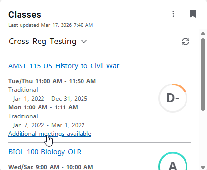
Page Designer enhancements
For Page Designer pages built with the HTML editor, styling around the content has changed. You will see less padding on the page. If you have added advanced styling through the HTML, check that the page is still behaving as expected.
For Page Designer pages built with the rich text editor, the header will now stay in place when scrolling.
resources and about endpoints
Previously, Experience configuration included defining resources and about endpoints for the Banner or Colleague Ethos APIs. To simplify the configuration process and avoid issues when those endpoints were not properly defined, Ellucian has modified Experience to no longer require those endpoints.
No action is required for Experience implementations where those endpoints have already been defined. They will be ignored.
Updates
For a list of the issues addressed in Experience 2.3, see the Related Defects and Related Enhancements tabs on the release page for Experience 2.3 in the Ellucian Customer Center.
Experience 2.2
Experience 2.2 provides an update to the Android version of the Experience App.
Update to the Experience App (rebuild required)
To provide these fixes to your users, rebuild the Android version of the Experience App using the instructions in (New app) Build the Android app.
Updates
Experience 2.1
Experience 2.1 provides the option to manage Experience permissions by role in Test environments.
Manage permissions by role
- The Resources tab is the existing view of permissions, displaying all of the roles and users who are assigned permissions on a particular resource. This view supports assigning permissions on a resource to multiple roles and users at the same time. However, when permissions are defined in a parent/child hierarchy, you can view or assign permissions for only one resource at a time (the parent or one of the children).
- The Roles and Users tab, shown in the screen shot below, is a new view that displays all of the permissions assigned to one role or user within a particular resource group. This view provides an intuitive view of permissions inheritance, and allows you to view and maintain all of the permissions (parent and all children) at the same time.
Each view has advantages and limitations. You might use both views within the same session to assign permissions and view the results of your changes.
For a detailed description, see Permissions views: resource and role. The procedure for Grant Experience application permissions has been updated to describe both options.
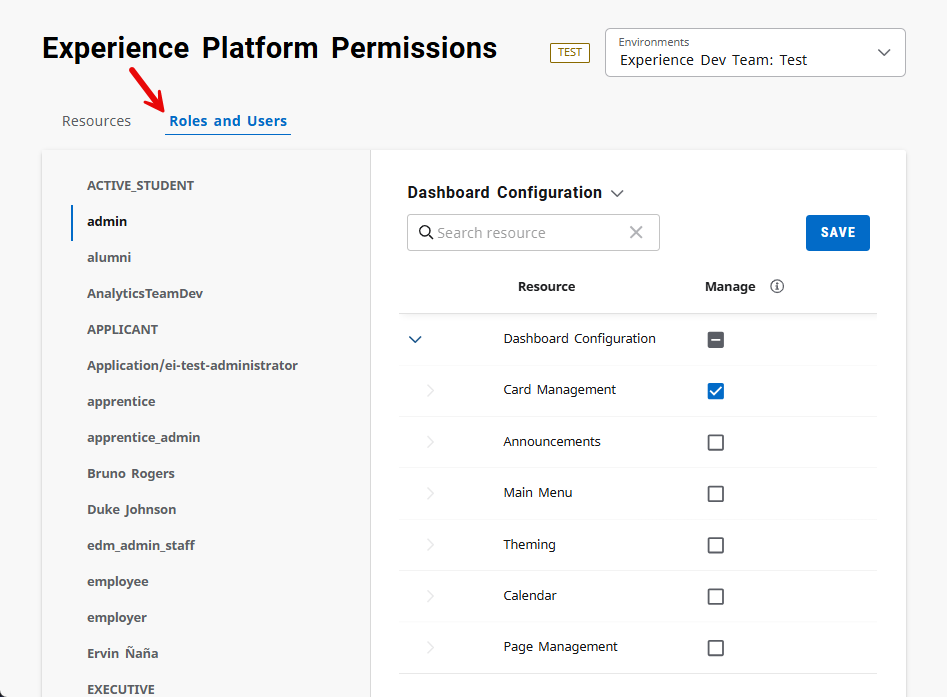
Update to viewing multiple dashboards in a multi-institution implementation
In a multi-institution implementation of Experience, users who need access to multiple dashboards can select from a list of dashboards on the user profile avatar, if you have set up that feature as described in (Multi-institution) Set up the institution affiliation attribute. Previously, selecting a dashboard would open that dashboard within the current browser tab, replacing the dashboard that the user had been viewing. With this release, selecting a dashboard opens that dashboard in a new browser tab.
Updates
For a list of the issues addressed in Experience 2.1, see the Related Defects and Related Enhancements tabs on the release page for Experience 2.1 in the Ellucian Customer Center.
Experience SDK 8.0.1
Experience SDK 8.0.1 is a major update that includes upgrades to new major versions of React, the Ellucian Path Design System, and ESLint. These upgrades provide significant enhancements but also include potentially breaking changes.
Enhancements in SDK 8.0.1
| Supporting application | Significant enhancements | Reference |
|---|---|---|
| React v19 |
|
React 19 Upgrade Guide and React v19 release announcement |
| Path v8.2.2 |
|
Path v7 to v8 Migration Guide |
| ESLint v9.33.0 |
|
ESLint 9.x Migration Guide |
Upgrading your extensions
To upgrade an existing extension to SDK 8.0.1, use the procedure in Upgrade to SDK 8.x from SDK 7.x or earlier.
Experience 2.0
Experience 2.0 provides the Ellucian Gen AI Writing Assistant in Experience rich text editors, and an update to the supported Android versions of the Experience App.
AI Writing Assistant in Free-form card and Page Designer (ERP SaaS only)
The Ellucian Gen AI Writing Assistant uses artificial intelligence (AI) to help you quickly create or edit content. The AI Writing Assistant is available in the rich text editors in the Page Designer (when using the rich text editor option) and the Free-form template card. The Ask AI icon is visible in the rich text editor toolbar to users who have been granted the required permissions in Ellucian Experience Setup.
The AI Writing Assistant uses both text that you enter in the text editor and contextual information about your role, your institution, and your current task to generate suggested content. If you don't know where to start, you can initiate the session without any text, and the AI Writing Assistant will provide suggested content based on contextual information about you and your task. The screen shot below shows an example using the AI Writing Assistant within the Page Designer.
For a more detailed description and the procedures, see Use the AI Writing Assistant in Experience and Grant permissions for the AI Writing Assistant.
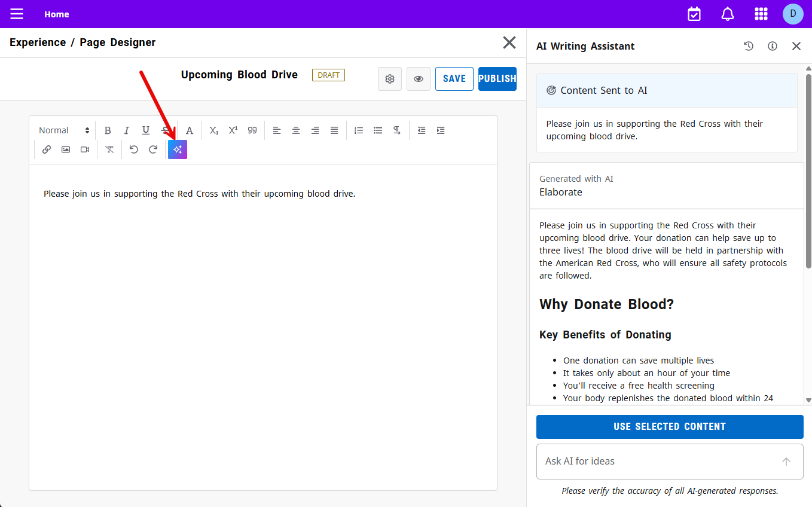
Experience App requires Android 12
The minimum supported Android version for the Experience App has been updated from Android 9 to Android 12.
When you build the Experience App after the release of Experience 2.0 and publish it to the Google Play Store, users with Android devices with older operating systems will be unable to upgrade to the latest version, or will be unable to install the app if they have not yet done so.
Updates
2025 Releases
Experience 1.99
Experience 1.99 provides an API key security enhancement in Experience card configuration and an update to the Experience App.
API key security enhancement - Experience card configuration
For some Experience cards, API keys are entered in card configuration within the Configuration area of Experience. Previously, the full API key was sent to the web browser when a user accessed the configuration for a previously-configured card. The API key was displayed in the UI as a row of asterisks, but could be viewed using developer tools.
With this release, only the first five characters of the API key are sent to the web browser when a user accesses Experience. The UI initially displays the API key as a row of asterisks. The user can use a new Show link to view the first five characters of the API key. For example, you could click the Show link to confirm that the Ethos API key for the desired Ethos application had been entered. Viewing the partial entry would likely be sufficient for this purpose.
To update the API key, you would enter the new key. An existing API key cannot be edited.
Experience App - upgrade to iOS 26 SDK
Beginning April 2026, Apple will require that all iOS and iPadOS apps uploaded to Apple App Store Connect or published to the Apple App Store must be built with iOS 26 SDK or later. Experience 1.99 includes updates that support the iOS 26 SDK.
This means that any build of the Experience App that you publish to the Apple App Store starting in April 2026 must have been built from the Mobile Application tab in Experience Setup after the release of Experience 1.99.
Existing published apps built with earlier versions of Experience will continue to work after April 2026. This requirement affects only apps that are submitted or published after April 2026.
Updates
Experience SDK 7.18.1
SDK 7.18.1 includes an upgrade to a new version of the Ellucian Path Design System.
Upgrade to Ellucian Path Design System v7.19.1
SDK 7.18.1 includes an upgrade to Ellucian Path™ Design System (Path) v7.19.1. For details on the enhancements in Path 7.19.1, see the Ellucian Path Design System release notes.
For a summary of dependency versions for all versions of the SDK, see the spreadsheet attached to Dependency bundles.
Upgrading your extensions
To upgrade an existing extension to SDK 7.18.1, use the procedure in Upgrade to the latest SDK 7.x version.
Experience 1.98
Experience 1.98 provides the display in the Classes and Class Schedule cards of the instructional method from Colleague, and other updates.
Instructional method displayed in Classes and Class Schedule cards (Colleague)
- For the Classes card, the instructional method is displayed on the card and on both the term view and class detail view of the Experience page that is accessed from the card.
- For the Class Schedule card, the instructional method is displayed on the class detail view of the card.
The value displayed is the description from the instructional method codes that you define on the ISTM form and associate with section meeting information on the SOFF form in Colleague. In the example screen shots below, the value is "Online."
- Install Colleague Web API 2.7 or later. Colleague Web API 2.7 includes changes to the
section-schedule-informationAPI that support this enhancement. - In Ethos Integration, ensure that the Ethos application for Colleague owns the
section-schedule-informationresource. - In the Classes or Class Schedule card configuration, enable the Enable improved performance (requires Banner API 9.34.1+ or Colleague Web API 2.7+) toggle switch.
This change addresses IDEA0001728 in the Ellucian Customer Center.
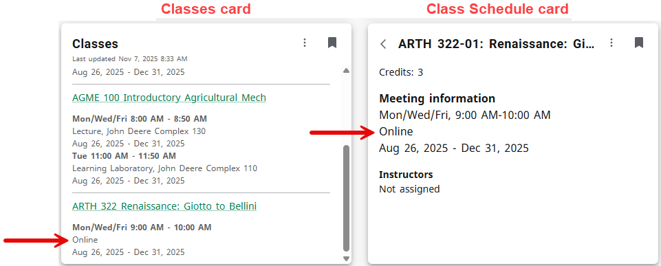
Update to the Experience App (rebuild required)
This release fixes an issue with sign-in to the iOS version of the Experience App, described in Product Defect PD0023677 in the Ellucian Customer Center.
To provide this fix to your users, rebuild the iOS version of the Experience App using the instructions in Build the iOS app.
Updates
For a list of the issues addressed in Experience 1.98, see the Related Defects and Related Enhancements tabs on the release page for Experience 1.98 in the Ellucian Customer Center.
Experience 1.97.2
Experience 1.97.2 provides inheritance for Experience permissions in Production environments and other updates.
Experience 1.97 releases
As part of our readiness for the upcoming release of permissions inheritance to Experience Production environments, the Ellucian Experience team has pushed a series of Experience 1.97.x releases to Test environments to ensure production readiness. All Experience 1.97.x features, including permissions inheritance, are scheduled for release to Production environments with Experience 1.97.2. For the details, see the post in Ellucian Community and Knowledge Article KB000512077, "Experience 1.97 Releases."
(Action required) Permissions inheritance in Production environments
Permissions inheritance was released to Experience Test environments with Experience 1.97.0 and is being released to Experience Production environments with Experience 1.97.2. With permissions inheritance, you can now grant permissions at the parent level and those permissions are automatically granted for all resources at the child level. For a detailed description, see Permissions inheritance enhancement.
To enable permissions inheritance, perform the procedure in Enable permissions inheritance. If you have defined any permissions for Ellucian Insights, use the procedure in Enable inherited permissions for systems with Insights instead.
Updates
For a list of the issues addressed in Experience 1.97.2, see the Related Defects and Related Enhancements tabs on the release page for Experience 1.97.2 in the Ellucian Customer Center.
Experience 1.97.1
Experience 1.97.1 provides simultaneous access to multiple dashboards and an API key security enhancement in Experience Setup. These features are being released to Experience Test environments with Experience 1.97.1, and scheduled for release to Experience Production environments with Experience 1.97.2.
Experience 1.97 releases
As part of our readiness for the upcoming release of permissions inheritance to Experience Production environments, the Ellucian Experience team has pushed a series of Experience 1.97.x releases to Test environments to ensure production readiness. All Experience 1.97.x features, including permissions inheritance, are scheduled for release to Production environments with Experience 1.97.2. For the details, see the post in Ellucian Community and Knowledge Article KB000512077, "Experience 1.97 Releases."
Simultaneous access to multiple dashboards
- Institutions with multiple tenants (such as Test and Development) within the Experience Test environment.
- Institutions with Production and SaaSProduction tenants within the Experience Production environment.
- Institutions using the multi-institution features of Experience. These institutions have a system-level tenant and multiple institution-level tenants within the Experience Production environment.
Previously, if a user wanted to have multiple dashboards open at the same time, they would have to use different browsers or an incognito window. Now, with enhancements to session management, the user can simultaneously view the dashboards for multiple tenants using the same browser, in separate browser tabs or windows.
API key security enhancement - Experience Setup
The API key for the Ethos application for Ellucian Experience is entered on the Dashboard Setup tab in Ellucian Experience Setup. Previously, the full API key could be viewed on that tab using a Show/Hide button. With this release, only the first five characters of the API key are sent to the web browser when a user accesses Experience Setup. The Dashboard Setup tab displays those five characters followed by a row of asterisks. The Show/Hide button has been removed. To replace the API key, the user clicks the new Edit icon  .
.
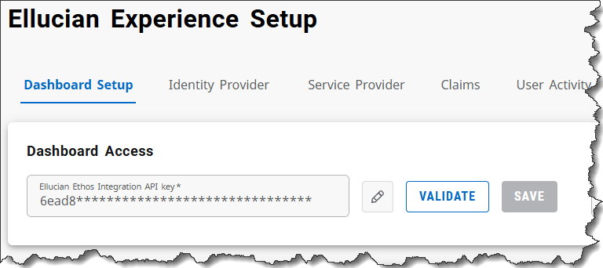
Experience 1.97
Experience 1.97 provides inheritance for Experience permissions in Test environments.
Experience 1.97 releases
As part of our readiness for the upcoming release of permissions inheritance to Experience Production environments, the Ellucian Experience team has pushed a series of Experience 1.97.x releases to Test environments to ensure production readiness. All Experience 1.97.x features, including permissions inheritance, are scheduled for release to Production environments with Experience 1.97.2. For the details, see the post in Ellucian Community and Knowledge Article KB000512077, "Experience 1.97 Releases."
(Action required) Permissions inheritance enhancement
Experience application permissions are configured in the Permissions area of Ellucian Experience Setup. For resources that are defined in a parent/child hierarchy, you can now grant permissions at the parent level and those permissions are automatically granted for all resources at the child level. For a detailed description, see Permissions inheritance enhancement.
To enable permissions inheritance, perform the procedure in Enable permissions inheritance. If you have defined any permissions for Ellucian Insights, use the procedure in Enable inherited permissions for systems with Insights instead.
Permissions inheritance enhancement
For permissions defined in a parent/child hierarchy, permissions granted at the parent level now apply to all child resources below it.
Overview
Experience application permissions are configured in the Permissions area of Ellucian Experience Setup. For some applications, the resources are defined in a hierarchy. With this release, you can now grant permissions at the parent level of the hierarchy and those permissions are automatically granted for all resources at the child level, where you can view but not remove the permission.
For example, Experience dashboard configuration permissions can be defined at the Dashboard Configuration level or the individual resource level (Card Management, Announcements, and so on). You can now grant roles or users the Manage permission at the Dashboard Configuration level, and those users will have the Manage permission on all of the dashboard configuration resources.

If you grant the Manage permission at the Dashboard Configuration level, and then view the permissions for one of the child resources, such as Card Management, the permissions check box is disabled (grayed-out) and you cannot remove the permission.
To ensure that you understand the impact of your changes, including inherited permissions, the procedure for granting permissions now includes a Confirm Changes to Permissions dialog that appears after you click Save. The dialog describes each permission change that will be made.
For more details, see Permissions inheritance. That topic covers key concepts in permissions inheritance, including recursive permissions and the impact of the future addition of child resources.
Cleanup of existing permissions
In previous releases, the permissions check boxes could be selected at the parent level (the Dashboard Configuration level in the example above), but selecting those check boxes had no effect, meaning the role or user did not receive that permission for the child resources. The permission had to be assigned to each child resource individually.
To ensure that there is no change in users' permissions, the upgrade process clears any check boxes selected at the parent level. As noted above, this does not change the actual permissions that users have because selecting those check boxes previously had no effect. If desired, you can now select those check boxes at the parent level and those permissions will be inherited for the child resources.
Ellucian Insights
Ellucian Insights has its own logic for interpreting permissions that is different from other Ellucian products. For more about Insights permissions, see Insights reporting tool permissions.
Enable permissions inheritance
When you first access the Permissions area in Ellucian Experience Setup after the release that includes inherited permissions, you will need to perform this procedure to enable permissions inheritance.
About this task
- Perform the procedure below at the institution level for each institution in your system. To access institution-level permissions, select the institution-level tenant when accessing Experience Setup.
- Perform the procedure below at the system level. To access system-level permissions, select the system-level tenant when accessing Experience Setup.
Procedure
What to do next
Experience 1.96
Experience 1.96 provides enhancements to the Classes card and Experience notifications along with other updates.
Option to display only verified grades in the Classes card (Colleague)
The Classes card and page can display grades from Colleague in a summary grade displayed within a circular gauge chart and within a Grades table on the class detail view of the page. The displayed grades are based on your entry in the Grade type code for Grade Indicator setting in Classes card configuration.
Colleague institutions can now specify that final grades will be displayed only if the grade is verified. This capability uses the TRANSCRIPT option in the Grade type code for Grade Indicator setting. The TRANSCRIPT option is supported only if you have enabled the Enable improved performance setting in Classes card configuration and have installed Colleague Web API 2.8 or later.
See Grades displayed on the Classes card and page for a detailed description of valid entries in the Grade type code for Grade Indicator setting and the resulting display of grades.
Realtime display of notifications
Experience users access their notifications by clicking the Notifications icon  in the Experience Bar. A red dot next to the icon indicates a new notification that the user has not yet seen. Clicking the Notifications icon opens the Notifications pane, which displays the user's notifications.
in the Experience Bar. A red dot next to the icon indicates a new notification that the user has not yet seen. Clicking the Notifications icon opens the Notifications pane, which displays the user's notifications.
In previous releases, there was a delay of up to one hour between the triggering of the notification and the display of the notification in Experience, and users might have to refresh the browser to see the red dot indicating a new notification. With this release, both the notification and the red dot are displayed within a few seconds of when the notification is triggered, without the need for a browser refresh. (Notifications for ERP holds might require up to one minute before being displayed in Experience because of the method used to retrieve notification data from the ERP.)
Update to the Experience App (rebuild required)
This release fixes an issue with memory page sizes within the Android version of the Experience App. Details are in Product Defect PD0027067 in the Ellucian Customer Center.
To provide this fix to your users, rebuild the Android version of the Experience App using the instructions in (New app) Build the Android app.
Updates
For a list of the issues addressed in Experience 1.96, see the Related Defects and Related Enhancements tabs on the release page for Experience 1.96 in the Ellucian Customer Center.
Experience 1.95
Experience 1.95 is a maintenance release that further strengthens Ellucian's security posture and access control protocols. For details, see the release page for Experience 1.95 in the Ellucian Customer Center.
This is an update to the Experience permissions service. The Experience application (the dashboard) and Experience Setup have not been updated, and the version displayed on both of those applications remains 1.94.0.
Experience 1.94.2
Experience 1.94.2 provides updates to the Classes card, including the display of the Common Course Number for California Community Colleges in Banner implementations.
This is an update to the Experience Classes service. The Experience application (the dashboard) and Experience Setup have not been updated, and the version displayed on both of those applications remains 1.94.0.
Display of Common Course Number for California Community Colleges
California Community Colleges use a common course numbering system across all colleges in the system. In Banner, the Common Course Number is entered in the Course Alias field on the SCACRSE form. Previously, the Classes card and page always displayed the entry in the Course Number field on SCACRSE. With this release, the Classes card and page now displays the entry in the Course Alias field if it exists; otherwise, the entry in the Course Number field is displayed.
For Colleague, no update was needed. The appropriate course number (either the basic course number or the Common Course Number) is entered in the same field in Colleague, which is displayed on the Classes card and page.
Updates
This release addresses Product Defect PD0026473 and Product Enhancement PE0006984 in the Ellucian Customer Center.
For the release deployment schedule for Experience Test and Production environments, see the release page for Experience 1.94.2 in the Ellucian Customer Center.
Experience 1.94
Experience 1.94 provides support for Android 16 in the Experience App and other minor updates.
Experience mobile app supports Android 16
The Experience App has been upgraded to support Android 16. The App now supports Android 9 through 16.
To provide this enhancement to your users, rebuild the Android version of the Experience App using the instructions in (New app) Build the Android app.
Updates
For a list of the issues addressed in Experience 1.94, see the Related Defects and Related Enhancements tabs on the release page for Experience 1.94 in the Ellucian Customer Center.
Experience 1.93
Experience 1.93 provides an update to the Experience App and other minor updates.
Update to the Experience App (rebuild required)
This release contains updates to the Experience App. To provide these updates to your users, rebuild the iOS and Android versions of the Experience App using the instructions in (New app) Build the Android app and Build the iOS app.
Updates
Experience 1.92 and Experience SDK 7.18.0
Experience 1.92
Experience 1.92 includes Productivity Cards that provide Experience users with access to their institutional Google or Microsoft email and documents.
Productivity Cards
This release includes new Productivity Cards that provide Experience users with access to their institutional Google or Microsoft email and documents. The Productivity Cards are available with Experience Premium. Further details on each type are provided below.
- After an Experience user signs in to Google or Microsoft through the cards, the sign-in remains active for six months unless the user signs out before that, rather than requiring users to sign in to the cards every time they sign in to Experience.
- After signing in through the Experience web application, users are automatically signed in on the Experience mobile app, and vice-versa.
- The Google Productivity Cards are supported on the Experience mobile app.
Transitioning to the delivered cards also ensures that you will benefit from any future enhancements to the cards.
Google Productivity Cards
- The Gmail card displays the 10 most recent inbox emails from a user’s Gmail account. The user can click on any email in the card to launch Gmail and open that email.
- The Google Drive card displays the 10 most recently modified documents from a user’s Google Drive account. The user can click on any file name in the card to launch the Google Drive web application and open the selected file.
To use the Google Productivity Cards, you must have a Google Workspace account.
For more details and the configuration procedures, see Google Productivity Cards.
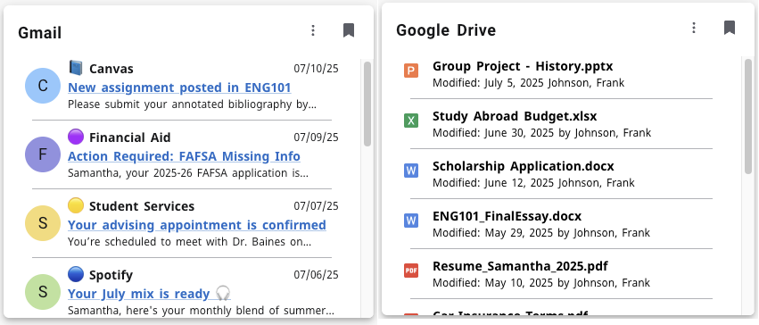
Microsoft Productivity Cards
- The Outlook card displays the 10 most recent inbox emails (both read and unread) from a user’s Outlook account. The user can click on any email in the Experience card to launch Outlook and open that email.
- The OneDrive card displays the 10 most recently modified documents from a user’s OneDrive account. The user can click on any file name in the card to launch the Microsoft OneDrive web application and open the selected file.
To use the Microsoft Productivity Cards, you must have a Microsoft Azure/Office 365 account.
For more details and the configuration procedures, see Microsoft Productivity Cards.
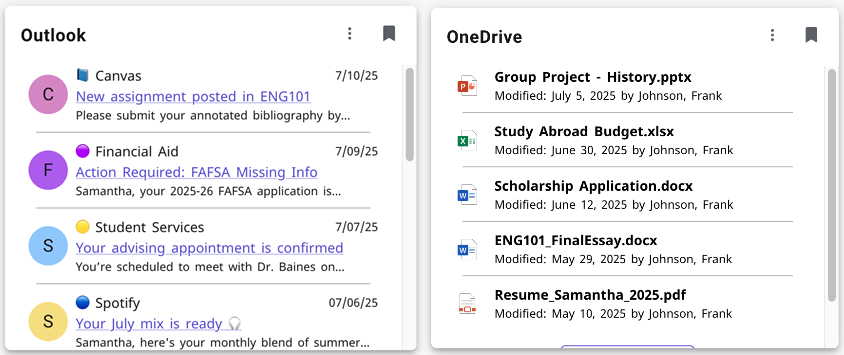
Update to the Experience App to support the Productivity Cards (rebuild required)
If you implement the Productivity Cards and you are using the Experience App, you will need to rebuild iOS and Android versions of the Experience App using the instructions in (New app) Build the Android app and Build the iOS app.
Updates
For a list of the issues addressed in Experience 1.92, see the Related Defects and Related Enhancements tabs on the release page for Experience 1.92 in the Ellucian Customer Center.
Experience SDK 7.18.0
SDK 7.18.0 includes an upgrade to new versions of the Ellucian Path Design System and ds-icons.
Upgrade to Ellucian Path Design System v7.19.0 and ds-icons v4.15.0
SDK 7.18.0 includes an upgrade to Ellucian Path™ Design System (Path) v7.19.0 and ds-icons v4.15.0.
Path 7.19.0 provides enhancements including a new AdvancedTable component designed for efficiently displaying, managing, and interacting with large datasets in a structured format. For details on the AdvancedTable component and other enhancements in Path 7.19.0, see the Ellucian Path Design System release notes.
For a summary of dependency versions for all versions of the SDK, see the spreadsheet attached to Dependency bundles.
Upgrading your extensions
To upgrade an existing extension to SDK 7.18.0, use the procedure in Upgrade to the latest SDK 7.x version.
Experience 1.91
Experience 1.91 provides enhancements to the Classes and Class Schedule cards.
Improved performance in the Classes and Class Schedule cards (Colleague)
The Classes and Class Schedule cards retrieve information from Colleague through the Colleague Web API. The latest versions of the section-registration-information and section-schedule-information APIs, delivered with Colleague Web API 2.7, support improved performance for those cards for Colleague. The performance improvements are now available for both Banner and Colleague.
- Install Colleague Web API 2.7.
- In Ethos Integration, ensure that the Ethos application for Colleague owns the
section-registration-informationandsection-schedule-informationresources. - In Classes card configuration, enable the setting labeled Enable improved performance (requires Banner API 9.34.1+ or Colleague Web API 2.7+).
The procedure for Set up the Classes and Class Schedule cards has been updated with instructions for using this enhancement with Colleague.
Production release - Enhancements to grades displayed in the Classes card and page
The Classes card and page can display grades from Colleague or Banner, in a summary grade displayed within a circular gauge chart and within a Grades table on the class detail view of the page. The image below shows an example of the class detail view of the page with both the summary grade and Grades table. The displayed grades are based on your entry in the Grade type code for Grade Indicator setting in Classes card configuration.
- If you leave the Grade type code for Grade Indicator setting blank, no grades are displayed. Previously, the grades table showed final and midterm grades even when that setting was left blank.
- Banner institutions can specify that final grades will be displayed only if the grade is verified (rolled). This capability uses the new TRANSCRIPT option in the Grade type code for Grade Indicator setting. The TRANSCRIPT option is supported only if you have enabled the Enable improved performance setting in Classes card configuration, which requires Banner Ethos API 9.34.1 or later.
See Grades displayed on the Classes card and page for a detailed description of valid entries in the Grade type code for Grade Indicator setting and the resulting display of grades.

Update to the Experience App (rebuild required)
This release fixes an issue with the Android version of the Experience App, described in Product Defect PD0023509 in the Ellucian Customer Center.
To provide this fix to your users, rebuild the Android version of the Experience App using the instructions in (New app) Build the Android app.
Updates
For a list of the issues addressed in Experience 1.91, see the Related Defects and Related Enhancements tabs on the release page for Experience 1.91 in the Ellucian Customer Center.
Experience 1.90 and Experience SDK 7.17.1
Experience 1.90
Experience 1.90 provides enhancements to the Classes card and the Theming configuration.
Classes card grades enhancement in Test environments only
The Experience 1.90 release to Test environments included an enhancement that allows you to specify that final grades will be displayed only if the grade is verified (rolled). After the Test release, an issue was discovered that impacted the display of grades when the FINAL grade code option is used. As a result, this enhancement is not being released to Production environments with Experience 1.90. It will be included in a later release.
Alt text for theme background image
When you set up a custom theme for Experience on the Theming tab in Experience Configuration, you can specify either a color or an image for the header background. If you specify an image, you can now specify Alt (alternative) text for the image, used by screen readers to describe the image to blind or low-vision users. For the updated procedure, see Apply a custom theme to Ellucian Experience.
Updates
For a list of the issues addressed in Experience 1.90, see the Related Defects and Related Enhancements tabs on the release page for Experience 1.90 in the Ellucian Customer Center.
Experience SDK 7.17.1
SDK 7.17.1 does not include new or enhanced features, but does include updates that enhance the security of the SDK.
Upgrading your extensions
To upgrade an existing extension to SDK 7.17.1, use the procedure in Upgrade to the latest SDK 7.x version.
Experience 1.89
Experience 1.89 addresses issues with the Experience App in addition to other updates.
Updates to the Experience App (rebuild required)
This release fixes two issues with the Experience App, described in PD0019409 and PD0023331 in the Ellucian Customer Center.
To provide these fixes to your users, rebuild the Experience App using the instructions in (New app) Build the Android app and Build the iOS app.
Updates
For a list of the issues addressed in Experience 1.89, see the Related Defects and Related Enhancements tabs on the release page for Experience 1.89 in the Ellucian Customer Center.
Experience 1.88 and Experience SDK 7.16.0
Experience 1.88
Experience 1.88 provides dashboard enhancements in Production environments, updates to the News and Events Feed template, and other enhancements and updates.
Experience dashboard enhancements in Production environments
- Improved card display on user dashboards (home page tabs)
- Experience header items open in a drawer
See the Experience 1.87 release notes for the details.
Enhancements to the News and Events Feed template (formerly the RSS Feed template)
You can use the News and Events Feed template to create a card that displays an RSS or Atom feed. This release includes enhancements to the template:
- The name of the template in the Select Card Template dialog has been changed to News and Events Feed (was RSS Feed) to reflect that the card can display either RSS or Atom feeds.
- Previously, the Configuration section of card setup included only the entry of the feed URL. With this release, the Configuration section includes new settings, shown in the image below, with which you can customize the date/time format, sort order, and other information displayed in the card. For a description of each setting, see the updated procedure for Create a News and Events Feed card.
This change addresses IDEA-70434 in the Ellucian Customer Center.
- When the number of news items is large, the card initially displays only the first 50 items, with a MORE button at the bottom of the feed to display additional items. This change improves the loading time when the feed contains a large number of items.
Previously, Ellucian recommended that you ensure the news feeds were limited to 50 or fewer items to optimize performance. With the addition of the MORE button, that is no longer necessary.
- Ellucian migrated the News and Events Feed template card to an Experience extension for consistency with other Ellucian-delivered cards and to support future development. Extension information is displayed in the Configuration section of card setup. The migration does not change the card behavior.
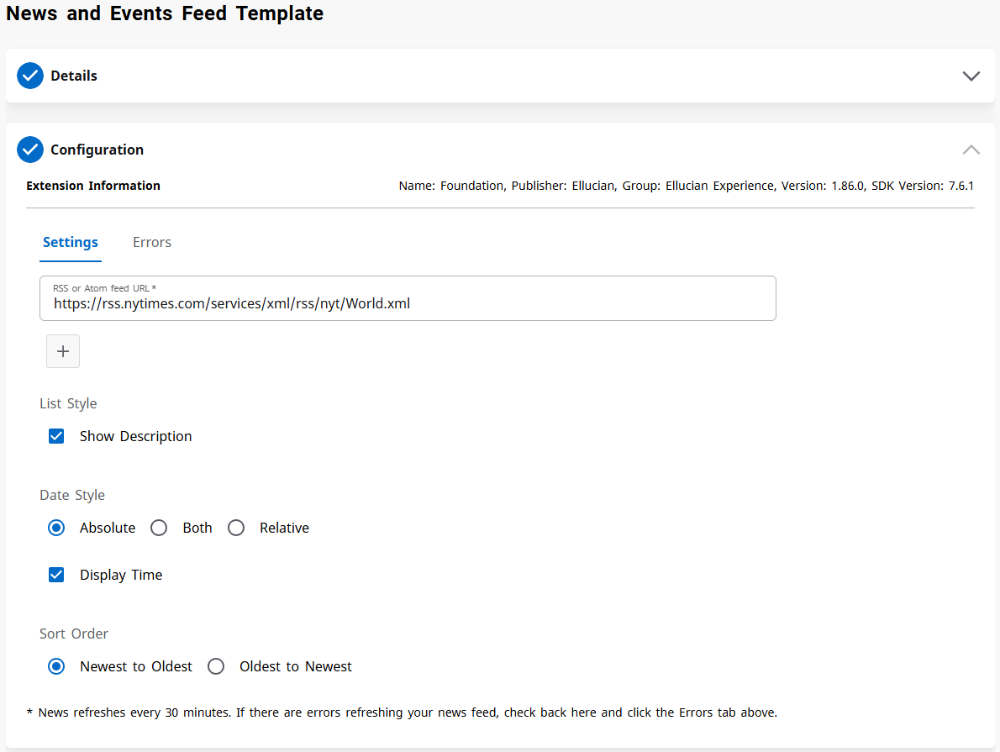
Individual API key for iOS app
Ellucian Experience uses an API key to securely access Apple when uploading your mobile app to the Apple Store. In the past, Apple supported a single API key used to manage all of your apps. The build process for the Experience App used that single key.
Apple now supports two types of API keys: a team key that is used to manage access to all of your apps or individual keys that support separate access to each app. The team key corresponds to the previously-supported single key.
- Set up the API key - Procedures for creating either a team key or individual key.
- Build the iOS app - Updated procedure with instructions for building the app using either a team key or individual key.
Updates to the Experience App (rebuild required)
This release fixes two issues with the Experience App, described in PD0021228 and PD0021898 in the Ellucian Customer Center.
To provide these fixes to your users, rebuild the Experience App using the instructions in (New app) Build the Android app and Build the iOS app.
Entra ID logout
Ellucian Experience can use Microsoft Entra ID (formerly Azure AD) as the identity provider. Previously, in Entra ID implementations, attempting to log out of Experience would lead to a Missing Authentication Token message. Logout now works correctly: the user sees the expected Experience logout page and is logged out of both Experience and Entra ID.
To implement this update, you will need to copy the Logout response URL value from the Service Provider tab in Experience Setup and paste it into the Basic SAML Configuration in Entra ID. See Step 6 of Define the basic SAML configuration in Entra ID.
This change addresses CR-000184172 in the Ellucian Customer Center.
Updates
Experience SDK 7.16.0
SDK 7.16.0 includes an upgrade to new versions of the Ellucian Path Design System and ds-icons, and an upgraded version of Node.js.
Upgrade to Ellucian Path Design System v7.18.1 and ds-icons v4.14.0
SDK 7.16.0 includes an upgrade to Ellucian Path™ Design System (Path) v7.18.1 and ds-icons v4.14.0. Several props and design tokens are deprecated in Path 7.18.1, and will be removed in a future Path release. The Ellucian Path Design System release notes lists the deprecated items and identifies the supported props and design tokens that you should replace them with. The release notes also describe other changes in Path 7.18.1.
For a summary of dependency versions for all versions of the SDK, see the spreadsheet attached to Dependency bundles.
Upgrade to Node.js 20.18.1
- Install Node.js 20.18.1 as described in Install Node.js.
- When you upgrade an extension to the latest SDK version using the procedure in Upgrade to the latest SDK 7.x version, delete the package-lock.json file and the node_modules directory before running
npm install.
Upgrading your extensions
To upgrade an existing extension to SDK 7.16.0, use the procedure in Upgrade to the latest SDK 7.x version.
Experience 1.87.1
Experience 1.87.1 supports builds of the Experience mobile application using the latest iOS SDK.
Beginning April 24, 2025, Apple requires that all iOS and iPadOS apps uploaded to Apple App Store Connect or published to the Apple App Store must be built with iOS 18 SDK or later. Experience 1.87.1 includes updates that support the iOS 18 SDK.
This means that any build of the Experience App that you publish to the Apple App Store on or after April 24 must have been built from the Mobile Application tab in Experience Setup after the release of Experience 1.87.1 on April 18, 2025.
Existing published apps built with earlier versions of Experience will continue to work after April 24. This requirement affects only apps that are submitted or published after April 24.
This is an update to the Experience Mobile build service. The Experience application (the dashboard) and Experience Setup have not been updated, and the version displayed on both of those applications remains 1.87.0.
Experience 1.87 and Experience SDK 7.15.0
Experience 1.87
Experience 1.87 provides a new tab bar below the Experience header in Test environments and other enhancements and updates.
Improved card display on user dashboards
The display of cards on user dashboards has been made more intuitive by the addition of a tab bar below the header, and other related user interface changes. For details, see Improved card display on user dashboards.
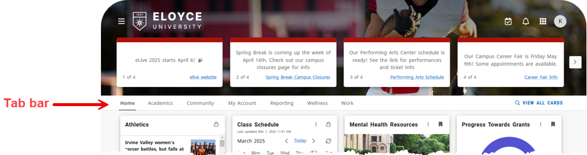
Experience header items open in a drawer
Items in the Experience header now all open in a drawer that opens from the right side of the browser window. The Tasks/Calendar item previously opened in a drawer, and with this release the Notifications, Applications, and Profile also open in a drawer, as shown in the example below for the Profile.
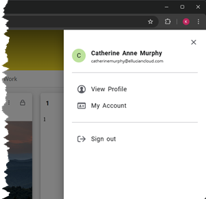
Instructional delivery method displayed in Classes and Class Schedule cards (Banner)
- For the Classes card, the instructional delivery method is displayed on the card and on both the term view and class detail view of the Experience page that is accessed from the card.
- For the Class Schedule card, the instructional delivery method is displayed on the class detail view of the card.
The value displayed is the description from the instructional delivery method codes that you define on the GTVINSM page and assign to course sections on the SSASECT page in Banner. In the example screen shots below, the value is "Traditional."
- Install Banner Ethos API 9.37 or later. Banner Student API 9.37 includes changes to the
section-schedule-informationAPI that support this enhancement. - In Ethos Integration, ensure that the Ethos application for the Banner Student API owns the
section-schedule-informationresource. - Ensure that the Banner user account for proxy API requests (the user account whose credentials are entered in the Ethos application for Experience) has Read permissions on
section-schedule-information(API_SECTION_SCH_INFORMATION security object). - In the Classes or Class Schedule card configuration, enable the Enable improved performance (requires Banner API 9.34.1+) toggle switch.
This change addresses IDEA0001728 in the Ellucian Customer Center.
Classes page navigation enhancement
Clicking a class title in the Classes card leads to the class detail view of the Classes page. On the upper left of that page, next to the class title, is a link to the term view of the Classes page. That link was previously a back arrow  which could be confusing because it implied a return to the Classes card on the Experience dashboard. The back arrow has been replaced with a CLASSES link as shown in the screen shot below. The navigation is unchanged; clicking the link leads to the term view of the Classes page.
which could be confusing because it implied a return to the Classes card on the Experience dashboard. The back arrow has been replaced with a CLASSES link as shown in the screen shot below. The navigation is unchanged; clicking the link leads to the term view of the Classes page.
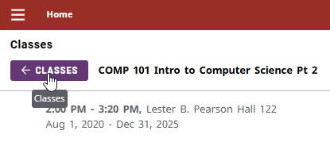
Updates
For a list of the issues addressed in Experience 1.87, see the Related Defects and Related Enhancements tabs on the release page for Experience 1.87 in the Ellucian Customer Center.
Improved card display on user dashboards
The display of cards on user dashboards has been made more intuitive by the addition of a tab bar below the header and other related user interface changes.
Tab bar on the dashboard
The dashboard now has a new tab bar, situated below the header and above the cards, that provides users with intuitive access to several views of available cards. The table below provides a brief description of each item on the tab bar. For a detailed description, see End user views of cards.
This enhancement addresses IDEA0002171, IDEA-72114, and IDEA-72392 in the Ellucian Customer Center.
| Item on the tab bar | Description |
|---|---|
| Home tab | The Home tab enables users to navigate from a category tab back to the home page. The cards displayed on the user's home page are unchanged - these are cards locked on the home page by administrators and cards saved by the user. |
| Category tabs (such as Academics in the screen shot below) | These tabs display the same cards, in the same order, as on the category pages accessed from the Experience main menu. Users can now access the category page from either the dashboard tab or the main menu. On both the tab bar and main menu, users see only the categories that include cards available to them based on their roles. The only difference between these views is that the category pages accessed from the main menu provide search and sort features that are not on the category tabs. |
| VIEW ALL CARDS link | This link provides access to the All Cards page, previously called the Discover page. This link replaces the DISCOVER MORE link that was located at the bottom of the dashboard. It has been moved to the tab bar for better visibility. |
Related user interface changes
- Cards no longer overlap with the header. Cards are in the space below the header and tab bar.
- Announcements no longer overlap with the header, but instead are fully within the header.
- If a user has no announcements, the height of the header is now smaller to provide more usable space for cards.
Documentation
The Experience documentation reflects the updated user interface. For example, the documentation refers to the "All Cards" page rather than the "Discover" page to reflect the renaming of that page. The documentation currently matches the Test environment, and will match the Production environment when these enhancements are released to Production.
Experience SDK 7.15.0
SDK 7.15.0 includes an upgrade to new versions of the Ellucian Path Design System and ds-icons.
Upgrade to Ellucian Path Design System v7.17.0 and ds-icons v4.13.0
SDK 7.15.0 includes an upgrade to Ellucian Path™ Design System (Path) v7.17.0 and ds-icons v4.13.0. For details on the enhancements in Path 7.17.0, see the Ellucian Path Design System release notes.
For a summary of dependency versions for all versions of the SDK, see the spreadsheet attached to Dependency bundles.
Upgrading your extensions
To upgrade an existing extension to SDK 7.15.0, use the procedure in Upgrade to the latest SDK 7.x version.
Experience 1.86
Experience 1.86 provides enhancements to ERP hold notifications and the display of academic details on the user profile page.
Users can dismiss Experience notifications from ERP holds
With this release, Experience users can dismiss notifications generated from ERP holds. The ability to dismiss notifications was previously available for other notification types, and is now also available for ERP hold notifications.
This enhancement depends on a defect resolution provided with Experience 1.84.1 on February 7, 2025. ERP hold notifications created before that date are not dismissable.
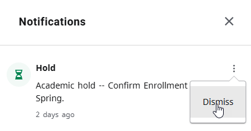
Improved display of academic details in the user profile
- If a user has multiple academic programs, each program is now on a separate tab rather than a separate space on the user profile page.
- In previous releases, majors, minors, and concentrations were all listed together under Majors. They are now listed separately with the appropriate label.
This change addresses Product Defect PD0018163 in the Ellucian Customer Center.
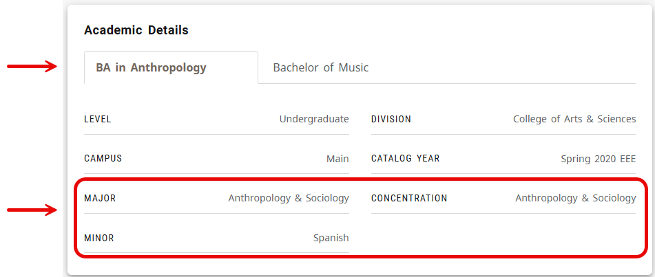
Updates
Experience 1.85 and Experience SDK 7.14.0
Experience 1.85
Experience 1.85 provides two new data card templates.
Data card templates - Big Number and Progress
This release introduces data card templates, which provide a framework from which you can create your own cards that use common data presentations. Data card templates are available with Experience Premium. Data card templates use an API to get the data needed to populate the card and use the API Selector to select that API when creating the card.
This release includes two templates:
| Template | Description |
|---|---|
| Big Number | Create a card that displays a single number, with an optional external link that provides more information. |
| Progress | Create a card that displays a graphical representation of progress toward a target value, such as a fundraising goal or credits towards a minor. |
For the procedures for creating a Big Number card or Progress card, see Data card templates.
Ellucian Forms is generally available
Ellucian recently released Ellucian Forms, which you can use to collect data with a no-code drag-and-drop form builder that integrates with other Ellucian Platform products. Ellucian Forms is available with an Intelligent Processes Workflow Automation License. For details, see the Ellucian Forms documentation.
Updates
Experience SDK 7.14.0
SDK 7.14.0 includes an upgrade to new versions of the Ellucian Path Design System and ds-icons.
Upgrade to Ellucian Path Design System v7.16.0 and ds-icons v4.12.1
SDK 7.14.0 includes an upgrade to Ellucian Path™ Design System (Path) v7.16.0 and ds-icons v4.12.1. For details on the enhancements in Path 7.16.0, see the Ellucian Path Design System release notes.
For a summary of dependency versions for all versions of the SDK, see the spreadsheet attached to Dependency bundles.
Upgrading your extensions
To upgrade an existing extension to SDK 7.14.0, use the procedure in Upgrade to the latest SDK 7.x version.
Experience 1.84
Experience 1.84 provides an enhancement to the ERP Advisor card, support for Android 15 in the Experience App, and other updates.
ERP Advisor card displays advisors for future terms
The ERP Advisor card previously displayed a student's advisors for the current term. The card now also displays advisors for future terms, ensuring that students can see their advisors for an upcoming term in the card. This enhancement addresses IDEA0001313 in the Ellucian Customer Center.
Experience mobile app supports Android 15
The Experience App has been upgraded to support Android 15. The App now supports Android 9 through 15.
To provide this enhancement to your users, rebuild the Android version of the Experience App using the instructions in (New app) Build the Android app.
General availability of Anonymous Grading for Banner
Ellucian announces the release of Anonymous Grading, which supports grade entry in Banner by anonymous ID rather than student name to avoid potential bias in the grading process. Anonymous Grading is available with Experience Premium.
Administrators access the configuration page for Anonymous Grading from the Experience Application menu. Faculty access Anonymous Grading from the Faculty Grading card, which provides a list of a faculty member's current courses with a link to the grading page for each course. The card supports two types of courses:
| Course type | Description |
|---|---|
| Anonymous grading | These are courses for which the grade entry page identifies students by an anonymous ID rather than the student's name. Clicking the course link in the card opens a grade entry page for that course in Experience. |
| Non-anonymous grading | These are courses for which the grade entry page identifies students by name. This is the typical grading for most courses, and many institutions will have only non-anonymous grading courses. Clicking the course link opens a Banner grade entry page for that course. |
Because the Faculty Grading card supports non-anonymous grading courses, it is useful even for institutions that don't require the anonymous grading features but want to have a grading card for their faculty.
- If your implementation includes both anonymous and non-anonymous grading courses, use the procedures in Ellucian Anonymous Grading.
- If your implementation includes only non-anonymous grading courses, use the procedures in Faculty Grading card (Banner).
Updates
Experience 1.83
Experience 1.83 provides support for landscape mode for the Experience App and clarification of Experience data tracking.
Experience App supports landscape mode (rebuild required)
The Experience App can now be viewed in landscape mode. Support for landscape mode on iPads was introduced in an earlier Experience release, and this release adds landscape support for iPhones and Android devices. This enhancement addresses IDEA-72293 in the Ellucian Customer Center.
To provide this enhancement to your users, rebuild the Experience App using the instructions in (New app) Build the Android app and Build the iOS app.
Clarified data tracking information
Ellucian Experience users can choose whether to allow the use of non-essential cookies and third-party analytics to improve Ellucian Experience. That choice is presented in the Enhance Your Experience dialog when the user first accesses Experience, and the user can change that decision later from the user profile.
The description of that data tracking has been updated in both the initial dialog and the user profile to better describe the benefits to both that user and all Experience users of permitting data to be tracked. The initial dialog also includes a link to the new What is tracked in Experience page in this documentation, which provides details on how Experience measures and uses data.
New Experience cards for Human Capital Management
Ellucian recently released new Experience cards for Human Capital Management (HCM). The HCM cards enable employees to access personal and job related information. The cards are described in Human Capital Management cards, and procedures for setting up those cards in Experience are in Set up the Human Capital Management Cards.
Updates
This release addresses an issue that prevented Experience users from getting notifications for ERP holds. This update addresses Product Defect PD0010965.
For a list of all of the issues addressed in Experience 1.83, see the Related Defects and Related Enhancements tabs on the release page for Experience 1.83 in the Ellucian Customer Center.